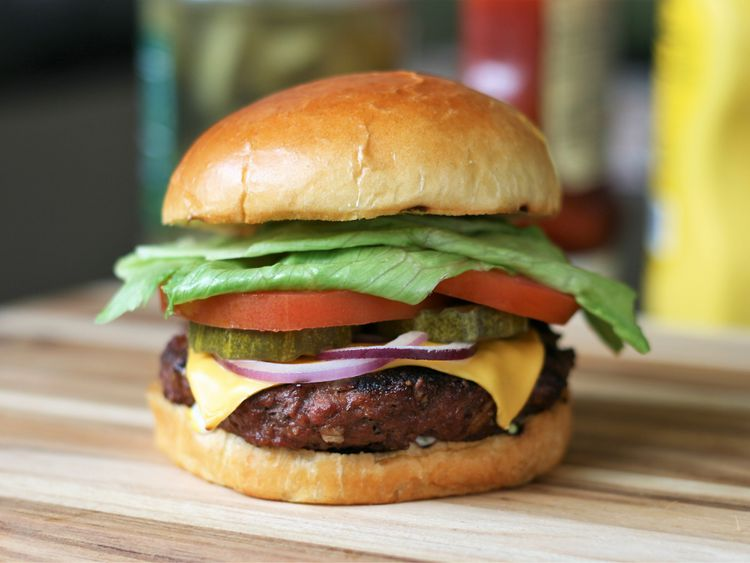

The Perfect Burger

Description
A healthy and flavorful bruger with a little extra crunch.
Below you will find a list of ingredients and easy to follow step-by-step instructions.
Ingredients
- 2 pounds extra-lean ground beef
- 1 (1 ounce) packaged dry onion soup mix
- 1 egg, lightly beaten
- 2 teaspoons hot pepper sauce
- 2 teaspoons Worcestershire sauce
- 1/4 teaspoon ground black pepper
- 3/4 cup rolled oats
Directions
- Preheat an outdoor grill for medium high heat and lightly oil grate.
- In a large bowl, combine the beef, onion soup mix, egg, hot sauce and oats. Shape into 6 patties.
- Grill patties over medium high heat for 10 to 20 minutes, or to desired doneness.